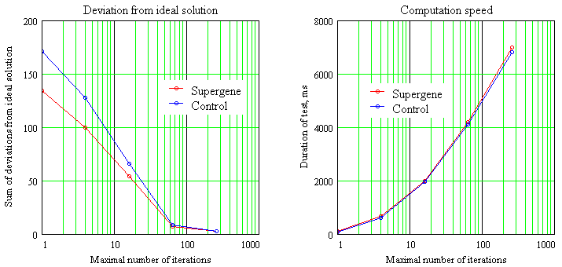
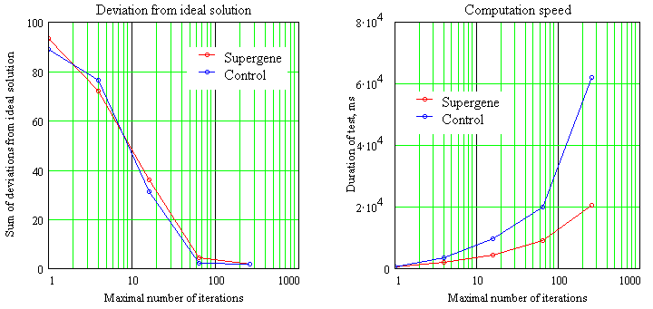

The test task: given amount [20..99] in pennies. Express this value in pennies, nickels (5 pennies), dimes (10 pennies) and quarters (25 pennies), additional requiring, that the number of pennies and nickels should be both even or both odd. For some amounts the ideal solution does not exists, and the system should suggest an alternative with a slightly different change amount.
In the supergene version, the chromosome, representing the solution of the task, consisted of 2 regular genes (quarters and dimes) and one supergene, enclosing two subgenes (nickels and pennies). The supergene validity condition was set to nickels mod 2 = pennies mod 2. The alternative algorithm used chromosome with 4 independent genes and estimation function, including the mentioned condition.
The test program computed the change for all values from 20 to 99, measuring the computation speed and deviation from the ideal solution (exact change amount and the satisfied additional condition). The test was repeated 10 times, averaging the data. The test program was executed on computer, having Intel Pentium 4 2.5 Mhz processor, 512 Mb RAM, Windows XP SP 2.0, Java 1.4.2 b-28.
The results were dependent from the population size and maximal allowed number of iterations.
For the small population size (64) and small number of iterations the supergene method is a little more accurate, running roughly at the same speed as the simplified version. However this advantage decreases when incrasing the number of allowed iterations.

For the moderate population size (512) the supergene method is significantly (up to three times) faster than the simplified version.

For a large populations (1024) the supergene method may be slightly less accurate. However this difference seems minor, and the method is still up to three times faster than the simplified version.
The supergene conception can significantly (up to 3 times) increase the evolution speed. It can also increase the accuracy of solution for the small populations. However these effects are dependent from the chosen population size and maximal number of iterations. While in some cases the use of supergenes can be definitely sensible, we would recommend to try both supergene and non-supergene versions for your specific task.
This testing work has been performed by Audrius Meskauskas
This page is copyright © 2004 Audrius Meskauskas, GNU free documentation license